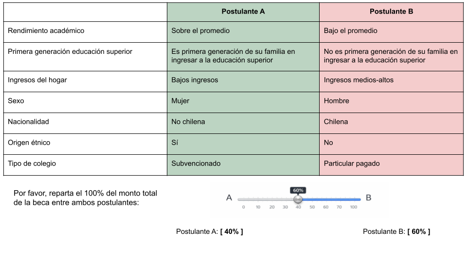

Diseño Conjoint Survey Experiment
Desigualdad y merecimiento en educación superior en Chile
Investigador Principal: Juan Carlos Castillo1
Asistentes de Investigación: Andreas Laffert2 y René Canales2
1 Departamento de Sociología, Universidad de Chile
2 Instituto de Sociología, Pontificia Universidad Católica de Chile
FONDECYT N°1250518 - Justicia de mercado y merecimiento del bienestar social
Workshop - Enfoques experimentales sobre redistribución y merecimiento
23 de enero, 2026
Contexto del proyecto
Agenda de investigación
Privatización y mercantilización de servicios sociales (salud, educación, pensiones) han reconfigurado las instituciones del bienestar (Gingrich, 2011; Streeck, 2016)
En Chile: profunda comodificación con alta desigualdad y bajo gasto social (Ferre, 2023; Madariaga, 2020)
Este orden económico se refleja en una economía moral específica/policy-feedback effects (Campbell, 2020; Fourcade & Healy, 2007; Mau, 2015)
Preferencias por justicia de mercado (Busemeyer, 2015; Castillo et al., 2025; Immergut & Schneider, 2020; Koos & Sachweh, 2019; Lindh, 2015)
Este proyecto
Abordar sistemáticamente las preferencias por criterios de mercado en salud, pensiones y educación, sus determinantes y cómo han cambiado en el tiempo en Chile
Las preferencias por justicia de mercado se asocian a criterios de merecimiento fuertemente arraigados en la población → Marco CARIN (Oorschot, 2000)
Objetivo: Analizar en Chile (y en perspectiva comparada) el nivel y la evolución de las preferencias por justicia de mercado en las últimas dos décadas y su vínculo con criterios de merecimiento del bienestar
Argumento: El alto grado de comodificación del bienestar en Chile habría reforzado normas meritocráticas (especialmente el énfasis en el esfuerzo), elevando el apoyo a la justicia de mercado frente a países con menor comodificación
Método: Análisis de datos secundarios, levantamiento de datos y experimentos de encuestas
En esta ocasión…
Diseño conjoint survey experiment (Hainmueller et al., 2014)
Objetivo: evaluar cómo criterios de merecimiento y de desigualdad afectan la asignación de becas para la financiar el primer año de educación superior en Chile
Merecimiento (CARIN): el acceso al bienestar es condicional según si las personas “merecen” beneficios (Control, Actitud, Reciprocidad, Identidad y Necesidad) (Meuleman et al., 2020; Oorschot, 2000)
Conjoint Survey Experiment
¿Qué es un conjoint?
Experimento factorial que presenta perfiles construidos con múltiples atributos que varían simultáneamente (Hainmueller et al., 2014)
Los encuestados evaluan perfiles (eligen o califican)
Identificar qué atributos se consideran más relevantes cuando la decisión exige ponderar múltiples criterios simultáneamente (Bansak et al., 2021b; Hainmueller et al., 2014)
Diseñado para estudiar preferencias multidimensionales con trade-offs reales (Bansak et al., 2021a)
Elementos del diseño de conjoint
Escenario: rol del encuestado y contexto de decisión
Tarea (\(k\)): qué debe hacer el encuestado con la información
Atributos (\(l\)) y niveles (\(D_l\)): características (tratamientos) que varían → (ej. Sexo: hombre/mujer)
Perfiles (\(j\)): combinaciones aleatorias de niveles de los atributos
Respuesta: discrete-choice o rating-choice
Aleatorización (asignación): uniforme e independiente por niveles de los atributos
Inferencia causal en conjoint
Lógica causal:
Aleatorización de niveles (\(D_l\)) de cada atributo (\(l\)) → identificación causal
Comparación entre niveles de un atributo, promediando sobre el resto
Supuesto clave:
\(Y_{i}(t) \perp\kern-5pt \perp T_{ikjl}\) (aleatorización)
\(T_{ijkl} \ \perp\kern-5pt \perp \{\,T_{ijk[-l]},\ T_{i[-j]k}\,\}\) (aleatorización completamente independiente)
Supuestos adicionales:
- Estabilidad (no carryover), ausencia de efectos de orden, consistencia (SUTVA) y positividad
Estimandos principales
La elección del estimando depende de la pregunta: ¿comparativa/marginal o descriptiva en niveles? (Leeper et al., 2020)
Average Marginal Component Effect (AMCE):
- Cambio promedio en el resultado cuando un atributo pasa de un nivel de referencia a otro, manteniendo constante “en promedio” el resto de atributos (gracias a la aleatorización) (Hainmueller et al., 2014)
Otros estimandos:
Marginal means (MM): nivel esperado de apoyo asociado a cada nivel del atributo (sin categoría de referencia)
Efectos condicionales e interacciones (ACIE): si el efecto de un atributo depende de otro
¿Por qué conjoint?
Ventajas
Captura decisiones multidimensionales con trade-offs reales
Eficiencia estadística: múltiples observaciones por encuestado/a
Reducción potencial de sesgo de deseabilidad social
Posibilidad de contrastar hipótesis rivales
Limitaciones (solucionables)
Masking, satisfacing y carga cognitiva
La validez externa depende del universo de perfiles
Efectos promedio pueden ocultar heterogeneidad relevante
Propuesta de diseño
Objetivo del experimento
Analizar cómo ciertos criterios de merecimiento y características de desigualdad afectan la distribución de recursos para financiar el acceso a la educación superior en Chile
Aproximar un escenario de toma de decisiones: asignar un recurso escaso (beca) entre postulantes que difieren en múltiples características (Almås et al., 2025)
Identificar qué criterios (merecimiento o desigualdad) se consideran más relevantes para la decisión bajo un contexto de distribución y ponderación de múltiples atributos (Hainmueller et al., 2014)
Imagine que usted fue seleccionado/a para integrar un comité que evalúa postulantes a una beca que financia el primer año de la educación superior en Chile.
En cada pantalla verá dos postulantes con información breve sobre sus características. En esta tarea, ambos tienen el mismo puntaje en la prueba de admisión a la educación superior (PAES): 650.
Su tarea es distribuir el 100% del monto total disponible ($3.000.000) entre ambos postulantes, de acuerdo con su criterio.

Atributos y niveles: Bloque CARIN
Los atributos operacionalizan 3 criterios de merecimiento (Control, Identity, Need)
Bloque CARIN:
| Componente | Atributo | Niveles |
|---|---|---|
| Control | Rendimiento académico | Sobre el promedio / Promedio / Bajo el promedio |
| Identity | Primera generación en educación superior | Sí / No |
| Need | Ingreso del hogar | Bajos ingresos / Ingresos medios-altos |
Atributos y niveles: Bloque desigualdades
Bloque desigualdades:
| Atributo | Niveles |
|---|---|
| Sexo | Hombre / Mujer |
| Nacionalidad | Chileno/a / No chileno/a |
| Pertenencia a pueblo indígena | Sí / No |
| Tipo de colegio | Municipal / Particular subvencionado / Particular pagado |
Aleatorización
Orden de atributos: aleatorizado por encuestado/a (se fija tras la primera tarea) para reducir primacía/recencia.
Diseño: aleatorización completa a nivel de perfil + PAES fijo a nivel de tarea.
7 atributos del perfil: asignación uniforme e independiente
- binarios: \(p=0.5\) por nivel; 3 niveles: \(p=1/3\)
Dos perfiles por tarea: \(X_{tA}, X_{tB}\) generados y se impone \(X_{tA}\neq X_{tB}\)
PAES: en cada tarea se fija \(S_t\) y se asigna igual a ambos perfiles:
\((X_{tA},S_t)\) vs \((X_{tB},S_t)\)Orden A/B: irrelevante (posición randomizada).
Ventaja: independencia entre atributos del perfil y resultados potenciales \(\rightarrow\) identificación de AMCE (Hainmueller et al., 2014)
Nº perfiles y tareas
- Atributos del perfil (7): \(|\mathcal{X}| = 3^2 \cdot 2^5 = 288\) perfiles únicos
- Perfiles por tarea: \(J=2\) (Postulante A vs B)
- Tareas por encuestado/a: \(k=5\)
- Atributo de tarea: PAES \(S_t\) fijo dentro de cada tarea (igual para A y B)
Espacio de pares posibles
- Por cada valor fijo de PAES:
\[ N_{\text{pares}\mid S}=\binom{288}{2}=41,328 \]
- En todo el diseño:
\[ N_{\text{pares totales}}=P\cdot \binom{288}{2} \]
Implementación
- Generación por tarea \(k\): muestreo uniforme por atributo \(\rightarrow\) 2 perfiles distintos \(X_{tA}\neq X_{tB}\); fijar PAES \(S_t\) común; randomizar posición A/B
- Formato: tabla (atributos en filas; postulantes en columnas) + slider 0–100% con restricción \(A+B=100\)
- Muestra: \(N=1,500\) (CAWI) \(\Rightarrow NT=7,500\) tareas; \(2NT=15,000\) evaluaciones de perfil
- Muestreo: cuotas por edad, sexo, educación y NSE (encuesta online)
Próximos pasos
Implementación y piloto
Programación del experimento en plataforma de encuestas
Piloto (N ≈ 800): evaluar tiempo, comprensión, patrones de respuesta, fatiga
Ajustes post-piloto: número de tareas (K) y atributos (T), redacción de niveles, restricciones
Campo principal: N ≈ 2.000, diseño muestral por cuotas
Discusión
Trade-off: número de atributos y riesgo del experimento
Carrera que quiere estudiar como reciprocidad
Cómo incluir talento y esfuerzo
Restricción por puntaje PAES (iguales entre perfiles)
Criterios CARIN ¿dentro y/o fuera del experimento?
¡Gracias por su atención!
- Github del proyecto: https://github.com/jus-mer